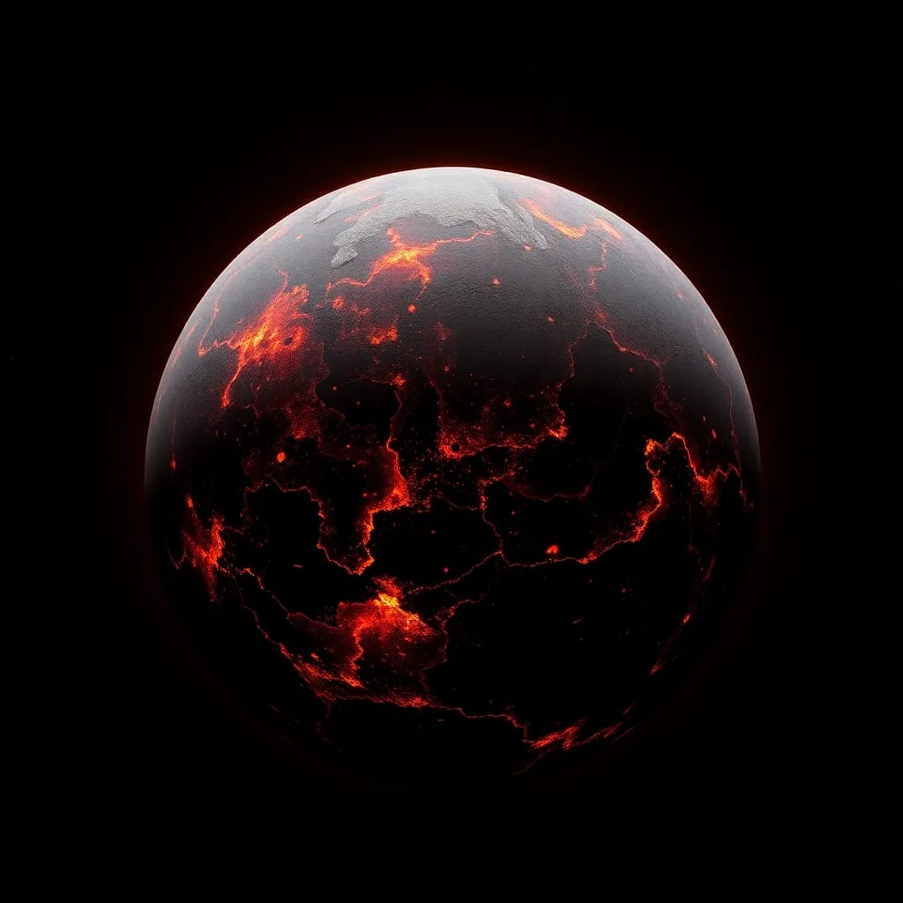

55 cancri e
This super hot world is covered in a global ocean of lava and has sparkling skies
• Distance
IT IS SITUATED AT 4O LIGHT YEARS FROM EARTH
How long to Travel Here from Earth?
Travel Speed
--
miles per hour
Travel Time
--
Billion Years
• Size :
It's MASS is 7.8 times Earths mass and
RADIUS is 1.875 times of Earth. It's parent star have almost similar size with our sun.
Planet Comparison
7.99 × Earth
1.875 × Earth
Star Comparison
0.91 × Our Sun
0.94× Our Sun
• Parent Star :
Kepler-452b orbits the G2-type star Kepler-452, which is similar to our Sun. Its temperature ranges from 5,300 K to 6,000 K, compared to the Sun's 5,772 K.
•Orbital Radius
Distance from its star: It's very close to its star, about 25 times closer than mercury is to the Sun.
•Orbital Period
Time to orbit the star: It takes only 18 hours to go around its star, faster than Earth's one day (24 hours)
1.046 AU
384.8 days
0
•Orbital eccentricity:
Shape of orbit: The planet moves in a nearly circular orbit with only slight deviation around its star

•Temperature:
The temperature on the day side of 55 Cancri e can reach up to 4,900°F (2,700°C)1. On the night side, temperatures are significantly cooler, around 2,509°F (1,376°C)

• color
Due to its extreme temperatures and possible volcanic activity, the planet is thought to have a dark, lava-covered surface. This gives it a dark, possibly reddish appearance.
• Weather :
This planet is tidally locked because it is very near to its star.it is believed that this planet rains rock . This planet is a fascinating place with extreme conditions that make it very different from Earth!
• Here are some cool things about 55 Cancri e:
55 Cancri-e is often called Janssen planet is lava world with sparkling skies. It have extreme weather conditions. This planet rains Rock . This is because of extreme temperatures. Here are some cool facts 1) this planet rains rock This planet is tidally locked with its star. 2)it revolve around the star called copernicus which is a k type star in the constillation cancer.
Planet Type : Super Earth